MAGE: Nearly Zero-Cost Virtual Memory for Secure Computation
This page was written by an AI model to give a high-level overview of the paper. Please check the paper for detail: USENIX.
Secure Computation (SC), meaning secure multi-party computation (SMPC) and homomorphic encryption (HE), lets parties compute on encrypted or private data, and industry has increasingly adopted it for federated analytics, collaborative learning, and authentication. The catch is memory: cryptography inflates every value. A 64-bit plaintext integer needs 8 bytes, but the same integer as a garbled circuit (an SMPC technique) takes 1 KiB, a 128x expansion. CKKS, an HE scheme, encodes a vector of real numbers into a ciphertext that can be hundreds of kilobytes. SC programs therefore outgrow physical memory quickly, and once they do, OS swapping makes them prohibitively slow: the SMPC framework Conclave reports that its Obliv-C backend can join only 30,000 records before running out of memory, and the system Senate can intersect only 10,000 integers per party.
Specializing the OS's page replacement policy to SC inherits classic paging problems: pages are fetched only on a fault, which needs multiprogramming to hide the stall, and realizable replacement heuristics such as LRU or LFU are known to behave poorly on some access patterns. Linux's madvise, the obvious lever for manual hints, is also too limited in practice: pages brought in with MADV_WILLNEED are not mapped into the page table, so the first access still faults, and MADV_PAGEOUT only marks pages inactive rather than swapping them out immediately.
MAGE's key observation is that SC is inherently oblivious: for an SC protocol to keep secret data secret, its memory access pattern must not depend on the input values. That means the entire sequence of memory accesses for a given computation can be computed once, offline, independent of what the encrypted data actually is. This lets MAGE apply Belady's MIN algorithm directly, something normally impossible because MIN is clairvoyant and used only as a theoretical yardstick for other algorithms. MAGE calls this offline approach memory programming, a generalization of paging that produces a static memory program, a plan of swap and prefetch operations for a target memory budget, instead of making eviction decisions reactively at runtime.
Concretely, a program is written in a DSL embedded in C++ (an Integer type for garbled circuits, a Batch type for CKKS). MAGE's planner runs this DSL code once to unroll it into a bytecode of high-level operations, not individual memory accesses, since an hour-long SC workload can issue trillions of those. A three-stage planner then assigns each variable to a virtual page (placement), decides which pages to evict and inserts swap directives using Belady's MIN over the whole unrolled program (replacement), and shifts swap-in directives earlier using a lookahead window and a small prefetch buffer so execution never stalls on storage I/O (scheduling). The resulting memory program is executed by a lightweight userspace interpreter, with no OS kernel changes, and can be split across parallel or distributed workers.
Across 10 SC kernels that do not fit in memory, MAGE beats OS virtual-memory swapping on all 10, by 4 to 12x on 7 of them, and runs all 10 within 60% of an "Unbounded" (no memory limit) baseline's speed, within 15% for 7 of them. MAGE also scales two real applications, password-reuse detection and computational private information retrieval, across multiple distributed machines.
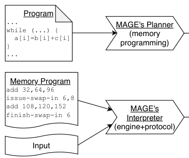
Key takeaways
- SC protocols must have data-independent memory accesses for security. MAGE exploits this obliviousness to precompute the full access pattern before running the actual computation.
- Because the future access sequence is known, MAGE can apply Belady's MIN algorithm directly instead of a realizable heuristic, and schedule prefetches so storage latency is masked rather than merely minimized.
- This "memory programming" is planned offline into a bytecode (the memory program), which is distinct from and more powerful than classic reactive OS paging.
- MAGE runs entirely in userspace as an ordinary Linux process; it supports garbled circuits and CKKS homomorphic encryption through a layered DSL/engine/protocol-driver architecture with the planner as a reusable "narrow waist."
- MAGE outperforms OS swapping by up to 12x across 10 workloads and comes within 15% of in-memory speed for 7 of them; it also scales password-reuse detection and computational PIR across distributed workers.
From a data-independent access pattern to a reusable memory program
Why SC's memory accesses can be known in advance, how MAGE's planner turns that into a swap/prefetch plan, and how it is implemented.
1 · Secure computation and why it needs so much memory
SC represents the function to compute as a combinational circuit C = (W,G): a set of wires W (data values) and gates G (operations). In garbled circuits (Yao's protocol), each wire is a single encrypted bit, and gates are binary AND/XOR; a garbler encrypts the circuit and sends it to an evaluator, who executes it gate by gate. In CKKS homomorphic encryption, each wire is a ciphertext encoding a vector of real numbers, and gates are element-wise addition or multiplication; multiplication consumes one "level" from a ciphertext's budget, and running out requires an expensive bootstrapping step that not all libraries implement.
Early systems materialized the entire circuit in memory, cost O(|W|+|G|). Later systems pipelined garbling and evaluation, and then reclaimed memory for wires once no remaining gate needs them, so only the live wires (the current working set, analogous to in-scope variables in a program) need to stay resident, cost O(w) where w is the largest live-wire set. MAGE builds on this line of work by asking what happens when even w wires do not fit in memory. A key cost driver is the SC scheme's expansion factor: garbled-circuit wires expand a bit 128x to 16 bytes, and CKKS ciphertexts for typical parameters are hundreds of kilobytes encoding vectors of dimension up to 4,096.
2 · Why reactive OS paging does not fit SC well
A natural first design is to specialize the OS's page replacement policy for SC. This inherits two problems from classic virtual memory: pages are fetched only when a fault occurs, which requires multiprogramming (running something else concurrently) to keep the CPU busy during the stall, and realizable replacement heuristics such as LRU or LFU are known to perform poorly on some workloads. Linux's own hinting interface, madvise, does not solve this either: as of Linux 5.10, MADV_WILLNEED pages are not mapped into the page table, so the first subsequent access still minor-faults, and MADV_PAGEOUT merely marks pages inactive rather than swapping them out right away.
A second obstacle is scale: materializing the raw memory access trace to plan around it is infeasible. The authors measured, using Intel Pin, that an SC workload finishing in under an hour can issue trillions of memory accesses, which would need terabytes of space to record.
3 · The key insight: obliviousness makes memory programming possible
SC protocols must be oblivious: if memory accesses depended on the secret data, an adversary could learn something about that data just by observing which addresses were touched. This is a security requirement, not a quirk of particular implementations. MAGE exploits it directly: because the access pattern for a given program is independent of the data, it is fixed and can be computed once in advance, outside the critical path of running the actual encrypted computation.
This reframes memory management as four planning questions: placement (how to lay wires onto pages), ordering (what order to evaluate gates in), scheduling (when to bring in pages that will be needed), and replacement (which resident pages to evict). MAGE optimizes scheduling and replacement, and uses a placement heuristic; it does not optimize ordering, evaluating gates in whatever order the DSL program implies, since optimizing ordering may be NP-hard and is left out of scope. Because the future access sequence is known, MAGE can use Belady's MIN algorithm for replacement directly. MIN is ordinarily a clairvoyant, unrealizable algorithm used only to benchmark heuristics; memory programming makes it directly usable.
4 · Three address spaces: where virtual becomes physical
The programmer writes DSL code against an address space that is effectively infinitely large (MAGE-virtual). MAGE's planner, not the OS, decides when to translate this into an address space that fits in RAM (MAGE-physical); the paper calls the OS's own virtual and physical addresses OS-virtual and OS-physical to avoid confusion. At runtime, MAGE's interpreter stores the program's data in one large array, and each MAGE-physical address is simply an index into that array, which roughly corresponds to an OS-virtual address inside MAGE's own process.
Doing this translation in the planner, rather than relying on OS address translation at runtime, gives the planner near-total control over when pages move and avoids runtime costs like minor faults, page table updates, and TLB invalidation. The tradeoffs are a longer planning phase (translation is done in software) and a larger memory program, since the memory program's length is proportional to execution time: a loop variable can be assigned a different MAGE-physical address on every iteration. The authors judged this acceptable because planning is off the runtime critical path and can be reused across runs with different (but same-shaped) inputs.
5 · Bytecode and the layered architecture
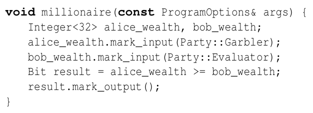
Rather than recording a bytecode instruction per gate, MAGE records one instruction per high-level DSL operation (e.g., a single "add two integers" instruction instead of the many AND/XOR gates that integer addition decomposes into). This avoids repeating the same subcircuit's trace every time the operation recurs; MAGE's planner can ignore the short-lived wires internal to a subcircuit because they are irrelevant to memory management. At runtime, an engine layer expands each instruction into the concrete subcircuit of gates, and a protocol driver layer executes those gates using the actual SC protocol (garbled circuits, CKKS, etc.).
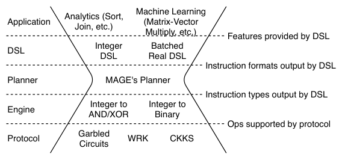
This split lets MAGE support different SC protocols by swapping the engine and protocol driver while reusing the planner unchanged. The planner only needs to know what memory each instruction touches, not what it computes, so adding a new instruction just means describing its address fields in a header. The planner is therefore the reusable "narrow waist" of the ecosystem: any DSL whose instruction types a given engine understands can be planned by the same core planning code.
6 · The planner's three-stage pipeline
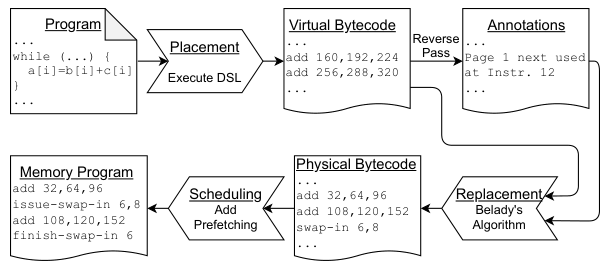
MAGE's planner has three stages, run in sequence and, for parallel/distributed programs, run separately and independently per worker. To keep the planner itself memory-light despite not benefiting from its own techniques, it streams intermediate bytecodes to and from files rather than holding them all in memory, keeps the DSLs lightweight, and tracks pages rather than individual bytes.
7 · Stage 1: Placement
Placement is a page-aware allocator for the DSL: it unrolls the program, assigns each variable a MAGE-virtual address, and ensures no variable straddles a page boundary (since adjacent MAGE-virtual pages may not be adjacent in the real address space at runtime). It borrows from slab allocators: each page holds only variables of one fixed size, and a variable's "slot" is freed when the variable goes out of scope. To reduce classic fragmentation (unusable leftover space on a page), new variables fill free slots on existing same-size pages before a new page is allocated. To reduce effective fragmentation (a page staying alive just because one wire on it is still live), the allocator prefers the candidate page with the fewest free slots, giving pages with few live variables a chance to fully drain and die.
8 · Stage 2: Replacement with Belady's MIN
Replacement decides which resident page to evict and inserts swap directives, translating MAGE-virtual addresses into MAGE-physical ones. A backward pass over the unrolled program first annotates, for every use of a page, the next time that page will be used. A forward pass then simulates execution using a priority queue of resident pages keyed by next-use time; the page with the farthest next use is evicted when room is needed, and evicted via a decrease_key-style update on every instruction. With N instructions and T pages fitting in memory, this stage costs O(N log T). MIN does not minimize swap-outs (only dirty pages truly must be written back, and that joint optimization is NP-hard), but it is within 2x of the swap-optimal solution in the worst case, which the paper judges good enough. For distributed programs, this stage also reads network directives to avoid stealing a page involved in an outstanding network operation, inserting network barrier directives when necessary.
9 · Stage 3: Scheduling, and parallel/distributed execution
Scheduling adds prefetching on top of MIN's eviction choices. A tunable lookahead ℓ tries to move each swap-in ℓ instructions earlier in the stream. Because an intervening instruction might need the destination frame before the prefetch finishes, scheduling budgets B extra frames as a prefetch buffer: data lands there asynchronously via an ISSUE-SWAP-IN directive and is only copied into its real destination frame, with a blocking FINISH-SWAP-IN, when actually needed. Swap-outs work symmetrically but lazily: a page is copied into the prefetch buffer and an ISSUE-SWAP-OUT starts the write, while the matching FINISH-SWAP-OUT is delayed as long as possible, issued only when the buffer needs the slot back. Buffer sizing follows Little's Law: with SSD bandwidth under 10 GB/s and latency under 1 ms, B ≈ 10 MB suffices in theory; the implementation uses 16 to 32 MiB to absorb burstiness, still under 1% of a typical server's memory.
For parallelism, MAGE's engine supports multiple workers: single-threaded, not necessarily hardware-isolated, each with its own statically-partitioned memory region. The programmer writes DSL code in an explicit distributed memory model, issuing network directives for transfers between workers; because a worker can only ever access its own memory, the planner can plan each worker's memory program independently and in parallel, without reasoning about concurrency. For SMPC, each party runs its own set of workers; the engine's network directives handle intra-party communication, while the protocol driver separately handles inter-party communication (e.g., garbler-to-evaluator garbled gates). Evaluation results for parallelism and for distributed applications are in the Evaluation tab.
10 · Implementation
MAGE is implemented in about 11,000 lines of C++ (common libraries, planner, protocol drivers, DSLs, engines, test/benchmark programs, and the underlying garbled-circuit cryptography, largely from EMP-toolkit), compiled with clang++ using -Ofast -march=native, and runs as an ordinary Linux process with no kernel changes. Swap directives use the kernel's aio facility with the swap file opened with O_DIRECT. Engines are C++ class templates parameterized by the protocol driver to avoid virtual-function overhead, which matters for cheap operations like free XORs. Garbled circuits use a wire-addressed (bit-granularity) address space and EMP-toolkit's fixed-key AES cryptographic kernels (an older, pre-MiTCCRH version, chosen to keep the evaluation's comparison fair). CKKS uses a byte-addressed space (ciphertext sizes vary by level) built on Microsoft SEAL; because SEAL's ciphertext objects contain pointers that MAGE cannot swap to storage along with the data array, the CKKS protocol driver serializes ciphertexts when idle and deserializes them around each operation, an overhead the paper separately measures in the Evaluation tab.
Evaluation
Framework comparisons, swapping overhead at two memory limits, planning cost, parallel scaling, and two distributed applications.
Most experiments ran on Microsoft Azure D16d_v4 instances, chosen because they have enough RAM to fit the Unbounded baseline and a local "temporary" SSD used for swap space and for the memory program file. Distributed application experiments added Google Cloud instances (n2-highcpu-2, n2-highmem-4) as the second SMPC party. Ten workloads were used for the core evaluation: merge, sort, and ljoin (sorted-list merging, sorting, and loop join, for federated analytics over garbled circuits), mvmul and binfclayer (matrix-vector multiply and a binary fully-connected neural-network layer, garbled circuits), and rsum, rstats, rmvmul, n_rmatmul, and t_rmatmul (sum, mean/variance, matrix-vector multiply, and naive/tiled matrix-matrix multiply, over CKKS).
| What | As stated in the paper |
|---|---|
| Platform | Azure D16d_v4 instances with local SSD swap; Google Cloud instances added for WAN/application experiments |
| Workloads | 10 kernels (5 garbled-circuit, 5 CKKS), plus password-reuse detection and computational PIR as full applications |
| Baselines | Unbounded (no memory limit), OS Swapping (same memory program, cgroup-limited, OS paging), EMP-toolkit (garbled circuits) and Microsoft SEAL (CKKS) for framework comparisons |
| Metric | Wall-clock execution time, typically normalized to the Unbounded baseline; separately, planner time and peak planner memory |
MAGE's own overhead is far smaller than EMP-toolkit's
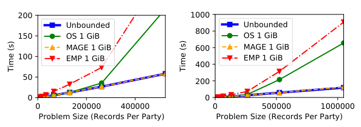
What it shows. Time (s) vs. problem size (records per party) for merge on garbled circuits, comparing Unbounded, OS Swapping at a 1 GiB limit, MAGE at 1 GiB, and EMP-toolkit at 1 GiB, with two panels zooming into small and large problem sizes. Input-reading time is excluded for both MAGE and EMP-toolkit in this comparison.
What to take from it. EMP-toolkit is about 3x slower than OS Swapping when the problem fits in memory (due to per-OT-extension network round trips on each input, inefficient network buffering, and virtual-function overhead), shrinking to about 33% relative overhead once memory is exceeded. The paper reports MAGE is an order of magnitude faster than EMP-toolkit overall, showing MAGE's runtime (used by the OS baseline too) is not the source of memory-programming's gains over naive swapping.
CKKS serialization overhead is modest
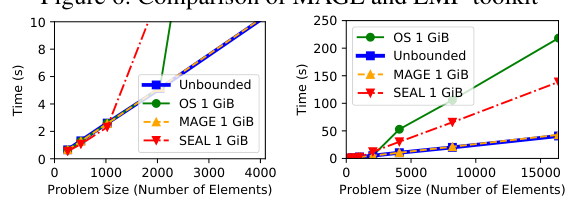
What it shows. Time (s) vs. problem size (number of elements) for rstats on CKKS, comparing Unbounded, OS Swapping (1 GiB), MAGE (1 GiB), and a C++ program using Microsoft SEAL directly (1 GiB), again with small- and large-size panels.
What to take from it. SEAL is faster than OS Swapping when the problem fits in memory, but by less than 20%, indicating MAGE's per-instruction ciphertext serialize/deserialize overhead is small. When the problem exceeds memory, SEAL improves further relative to OS Swapping but stays under 2x faster, meaning swapping overhead dominates serialization overhead once memory is exceeded.
At a 1 GiB memory limit, MAGE beats OS swapping by 4 to 12x
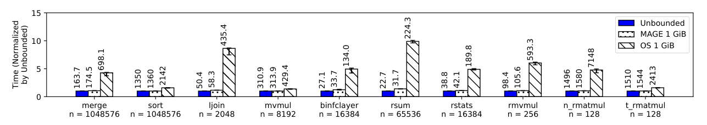
What it shows. For all 10 workloads at a 1 GiB cgroup memory limit, bars show Unbounded, MAGE, and OS Swapping time normalized to Unbounded, with absolute seconds printed on each bar.
What to take from it. MAGE outperforms OS Swapping by at least 4x on 7 of the 10 workloads, reaching about 12x for ljoin and about 10x for rsum, and stays within 15% of Unbounded for 7 workloads (including sort). The paper notes MAGE's advantage over OS scales with memory intensity rather than access-pattern complexity: mvmul gains less than binfclayer or rmvmul despite a similar access pattern because garbled-circuit integer multiplication has high cryptographic overhead relative to memory traffic, while merge and sort (complex patterns) do not show markedly larger gains than simple scans like ljoin, rsum, and rstats.
The advantage holds at larger scale (16 GiB limit)
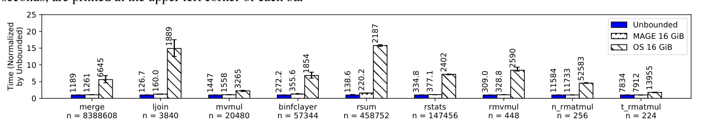
What it shows. The same comparison repeated with larger problem sizes and a 16 GiB memory limit (a larger y-axis scale than Fig. 8); sort is excluded because its intermediate planning bytecode did not fit on the local SSD.
What to take from it. The pattern from the 1 GiB experiment persists at 16 GiB: OS Swapping remains several times slower than MAGE across workloads, confirming the gains are not an artifact of a particular, small memory budget.
Planning is a one-time, lightweight cost off the critical path
| Workload | Plan time, Fig.8 setting (s) | Plan mem, Fig.8 (MiB) | Plan time, Fig.9 setting (s) | Plan mem, Fig.9 (MiB) |
|---|---|---|---|---|
| merge | 38.0 | 42.6 | 291.6 | 299.4 |
| sort | 367.3 | 42.7 | N/A | N/A |
| ljoin | 6.7 | 121.0 | 23.6 | 411.4 |
| mvmul | 56.0 | 527.5 | 298.2 | 3268 |
| binfclayer | 77.2 | 19.1 | 1041 | 165.7 |
| rsum | 0.04 | 9.6 | 0.29 | 30.2 |
| rstats | 0.04 | 10.9 | 0.34 | 48.5 |
| rmvmul | 0.09 | 16.4 | 0.24 | 36.9 |
| n_rmatmul | 2.2 | 246.1 | 18.6 | 1927 |
| t_rmatmul | 2.3 | 246.5 | 12.9 | 1246 |
What it shows. Table 1 in the paper: time and peak memory of MAGE's planner itself, for the workloads and sizes used in Fig. 8 and Fig. 9.
What to take from it. Planning time and memory-program size scale with the circuit's size (proportional to execution time), not with the runtime memory limit; planning times are generally smaller than the corresponding execution time, and the planner's own peak memory is far below the available runtime memory. The planner can be reused across runs with new inputs (for a fixed circuit), and can be run before any party's inputs are known. CKKS plans faster than garbled circuits because each CKKS instruction covers more memory per instruction. Final memory programs were under 100 MiB (CKKS, Fig. 8 sizes) to under 65 GiB (garbled circuits, Fig. 9 sizes); the planner itself needs about 4 to 5x more storage than the final memory program because it also materializes intermediate bytecodes.
Gains persist, and sometimes grow, under parallelism
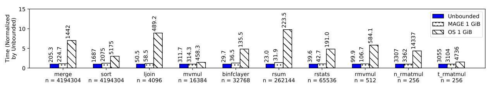
What it shows. The Fig. 8 comparison repeated with the computation parallelized across p = 4 workers per party, each on a separate VM instance with its own SSD, median of 3 trials.
What to take from it. Most workloads follow the same pattern as the single-worker case. For merge and sort specifically, MAGE's advantage over OS Swapping visibly increases; both have a mid-computation communication phase (several, for sort), and the paper attributes OS Swapping's extra slowdown there to the OS virtual memory system introducing jitter that interacts badly with that communication phase and produces stragglers, an effect memory programming avoids.
Scaling password-reuse detection to 227 users per party
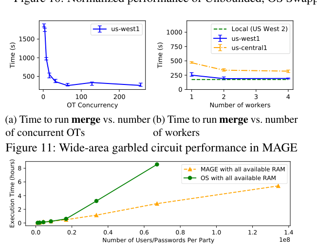
What it shows. Execution time (hours) vs. number of users/passwords per party, for a two-party garbled-circuit reimplementation (in MAGE's DSL) of Senate's password-reuse detection protocol, comparing MAGE and OS Swapping each using all available RAM. At the largest size (2^27 users per party, 1.125 TiB per party), the computation was spread across 4 Azure D16d_v4 instances (garbler) and 4 Google n2-highmem-4 instances (evaluator), with 2 workers per instance (8 workers per party) to use wide-area bandwidth effectively.
What to take from it. For a fixed time budget, MAGE processes about 3x as many user-password records as OS Swapping. The authors note this gain may have been larger with cloud instances offering a bigger swap-space-to-RAM ratio than the Ddv4-series instances they used.
Scaling computational private information retrieval
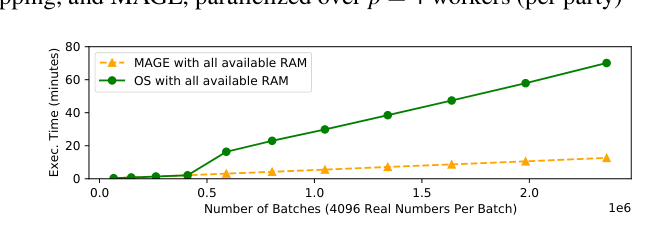
What it shows. Execution time (minutes) vs. number of 4,096-element batches in the database, for a single-worker CKKS implementation of the classic Kushilevitz-Ostrovsky single-server computational PIR scheme, comparing MAGE and OS Swapping, both using all available RAM. The OS baseline deliberately omits ad-hoc prefetching or multi-threading tricks that PIR's simple linear-scan access pattern would make easy, so the comparison isolates what MAGE automates.
What to take from it. For a fixed time budget, MAGE processes about 5x as many database elements as OS Swapping, on an access pattern (a pure linear scan) that is about as easy to prefetch as possible, suggesting the gain would likely be larger still for less regular applications.
FAQ
Q·What exactly does "memory programming" mean?▾
It is MAGE's term for computing a complete memory-management plan offline, before running the actual computation, rather than reacting to page faults at runtime. The output, a memory program, is a bytecode that already contains swap-in and swap-out directives at the exact points they should occur, planned using the full known access pattern.
Q·Why can MAGE use Belady's MIN algorithm, when every OS textbook calls it unrealizable?▾
MIN is unrealizable in general because it requires knowing which pages will be used next, i.e., the future. In ordinary programs the future depends on runtime branches and data, so it can't be known in advance. SC programs are different: their access pattern is fixed by the circuit and does not depend on the secret data, so MAGE's planner can legitimately compute "the future" ahead of time and feed it to MIN.
Q·What does "oblivious" mean here, and why is SC inherently oblivious?▾
A computation is oblivious if its memory access pattern reveals nothing about its input data. SC protocols must have this property: if which addresses were touched depended on secret inputs, an observer (even one without decryption keys) could learn something about the secret just by watching memory traffic, defeating the point of SC.
Q·What is a garbled circuit, in plain terms?▾
It is Yao's two-party SMPC protocol. One party (the garbler) encrypts a boolean circuit representing the function to compute, in a way that lets the other party (the evaluator) run the circuit gate by gate on encrypted wire values without learning the garbler's input, after an initial step (oblivious transfer) that supplies encrypted representations of each party's own inputs.
Q·What is CKKS / homomorphic encryption?▾
CKKS is a homomorphic encryption scheme: each ciphertext encrypts a vector of real numbers, and you can add or multiply two ciphertexts to get a new ciphertext encrypting the elementwise sum or product, without ever decrypting. Multiplication reduces a ciphertext's "level," a budget that limits how many sequential multiplications are possible before an expensive bootstrapping step is needed.
Q·Does MAGE require any OS kernel changes?▾
No. MAGE runs as an ordinary Linux process. It manages its own large data array and moves data to and from storage using the kernel's existing aio interface with O_DIRECT, bypassing the OS's own page cache and paging logic rather than modifying them.
Q·If MIN only decides what to evict, how does MAGE avoid stalling on swap-ins?▾
A separate scheduling stage adds prefetching on top of MIN's eviction decisions: it shifts each swap-in directive earlier by a tunable lookahead and stages the incoming data in a small prefetch buffer, so by the time the data is actually needed, the transfer has usually already finished and execution does not block.
Q·What's the difference between MAGE-virtual, MAGE-physical, and OS-level addresses?▾
MAGE-virtual is the effectively-infinite address space the DSL program is written against. MAGE-physical is the address space that actually fits in RAM, produced by the planner's replacement stage; it is an index into an array inside MAGE's interpreter process. The OS's own virtual and physical addresses (for that process) are called OS-virtual and OS-physical in the paper to avoid confusing them with MAGE's two address spaces.
Q·Why not just use madvise for prefetching and eviction hints?▾
As of Linux 5.10, MADV_WILLNEED does not map the prefetched pages into the page table, so the first access still takes a minor fault, and MADV_PAGEOUT only marks pages inactive instead of swapping them out right away. Both add runtime overhead and uncertainty that MAGE's precomputed, explicit swap directives avoid entirely.
Q·How does MAGE scale a computation across multiple machines?▾
The programmer writes the DSL program in a distributed memory model with explicit network directives, splitting computation across workers that each own a private memory region. Because a worker can only ever touch its own region, the planner can plan each worker's memory program completely independently (and in parallel), with no need to reason about concurrent access to shared memory.
Q·Is MAGE a replacement for frameworks like EMP-toolkit, SEAL, or ObliVM?▾
No, it is complementary. Those tools focus on specifying and optimizing an SC circuit (and, for EMP-toolkit, providing cryptographic kernels that MAGE's own garbled-circuit driver reuses). MAGE focuses on executing a given circuit efficiently when it does not fit in memory; in principle, an existing tool's optimized circuit could be fed into MAGE's planner through one of MAGE's DSLs or bytecode formats.
Q·What is the "narrow waist" idea in MAGE's architecture?▾
MAGE's planner does not need to understand what an instruction computes, only what memory addresses it touches, and it introduces no new instruction types besides swap directives that every engine understands. That means the same planner code works across different DSLs, engines, and protocols (garbled circuits, CKKS, and potentially future ones), making the planner a reusable core that every combination in the ecosystem passes through.
Q·Does MAGE help SMPC over a real wide-area network?▾
The paper reports a garbled-circuit experiment (§8.7) with the garbler on Azure and the evaluator on Google Cloud, in two regions. After tuning the TCP window and pipelining more oblivious-transfer rounds per connection, and parallelizing across multiple network flows, the paper found that the performance overhead from operating over the wide area was smaller than the overhead from swapping, meaning MAGE's techniques still provide a substantial benefit even when network latency is also a factor.